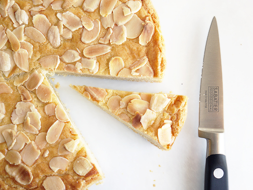

Cheddar Freezer Biscuits

Description
Ingredients
- 2/3 cup butter, softened to room temperature
- 1 cup granulated sugar
- 1 egg
- 1 tsp almond extract
- 1 1/2 cup flour
- 1/2 tsp baking powder
- sliced almonds and addiitional egg for topping, optional
Steps
- Preheat oven to 350 degrees. Grease or non-stick spray a round cake pan.
- In a stand mixer or with a handhold beater, cream the butter and sugar on medium speed.
- Add in the egg and almond extract. Continue to beat on medium speed until just combined.
- Add in flour and baking powder and mix on low until just combined. Dough should be thick, similar to cookie dough.
- Press dough into prepared cakepan, ensuring it covers the entire bottom of the pan.
- Optionally, distribute a single layer of sliced almonds across the top of the cake and gently press into the surface.
Beat an egg with 1 tsp of cold water to create an egg wash and brush over the top of the cake
- Bake for 30 minutes, or until golden brown on the edges.
- Remove from oven and let cool, then slice and serve.